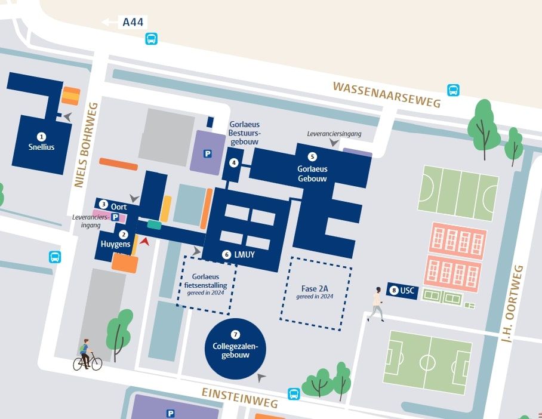

Emma Brakkee (Leiden)
Martin Bright (Leiden)
Dominique Mattei (Bonn)
Evgeny Shinder (Sheffield)
Emma Brakkee (Leiden)
Martin Bright (Leiden)
Dominique Mattei (Bonn)
Evgeny Shinder (Sheffield)
12:45 - 13:45: Bright
TITLE: Rational points on K3 surfaces: some recent developments
ABSTRACT: The behaviour of the rational points on a variety over \mathbb{Q} is strongly influenced by the geometry of the variety. Some questions one can ask relate to so-called “local-global” principles: if a variety admits points over the reals and over every p-adic field, does it have a rational point ("the Hasse principle")? Can real and p-adic points always be approximated by rational points ("weak approximation")? In recently published work with Rachel Newton, we prove the following result: every variety over a number field admitting a non-zero global 2-form and having a prime of good ordinary reduction fails weak approximation, possibly after a finite extension of the base field. The simplest example that one might hope to find illustrating this result is a K3 surface over \mathbb{Q}; such an example was found by Margherita Pagano. I will explain the ideas behind this work and the example.
14:00 - 15:00: Brakkee
TITLE:
Singular symplectic varieties via Prym fibrations
ABSTRACT:
We construct new examples of singular symplectic varieties, as relative
Prym varieties associated to linear systems on surfaces with a double
cover of a K3 surface. This construction has been studied before for the
anti-canonical linear system on low degree del Pezzo surfaces, and for
Enriques surfaces. We expand on this by considering arbitrary surfaces
with a K3 double cover. I will explain the construction and discuss
criteria for when the resulting variety is primitive symplectic or
irreducible symplectic. This is joint work in progress with C. Camere,
A. Grossi, L. Pertusi, G. Saccà and A. Viktorova.
15:00 - 15:30: Coffee Break
15:30 - 16:30: Mattei
TITLE: Special Brauer group and twisted Jacobians.
ABSTRACT: An elliptic K3 surface S with section is isomorphic to its relative Jacobian parametrizing degree 0 line bundles on the fibres of the fibration. Following Ogg-Shafarevich theory, the twists of this fibration (i.e. elliptic K3s, the Jacobian of which are isomorphic to S) are parametrized by the Brauer group of S. Moreover, these twists identify with moduli spaces of twisted sheaves on S. Using Grothendieck Special Brauer Group, I will explain how to extend this theory for elliptic K3 without section, and on higher dimensional moduli spaces of twisted sheaves supported on curves on a K3. If time permits, I'll discuss applications of the special Brauer group to the period-index problem. This is based on a joint work with Daniel Huybrechts.
16:45 - 17:45: Shinder
TITLE: Derived equivalence and jacobians of elliptic K3 surfaces
ABSTRACT: I address the question of Hassett-Tschinkel on whether all Fourier-Mukai partners of an elliptic K3 surface are among their relative Jacobians. The answer is positive in the coprime rank two case, but negative in general. The proofs involve Brauer groups, transcendental lattices of K3 surfaces, and the counting formula for Fourier-Mukai partners. On the conceptual level the structures we study can be thought of as derived jacobians of a K3. This is joint work with Reinder Meinsma.

Send an email to Y. Dutta